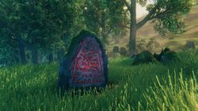
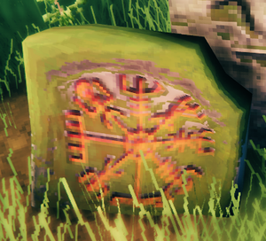

符文石
本站支持中英文站内搜索。带 ↗ 的链接指向外部网站；各页来源版本见页脚。


符文石是英灵神殿中的一种建筑。
说明
符文石是刻红色符文的大石，包含背景故事及有关某些生物的实用提示。动物也会在“自己的”石头附近生成，例如鬓猪符文石旁常有鬓猪游荡。
导向符文石


“奥丁将这些魔法石散布各地，作为指向弃誓者仪式场地的路标。”——福金
指引符文石会揭示首领位置，在世界地图标出对应首领最近的地点。启用“nomap”时，则使镜头转向该地点。各生物群系中可找到指引符文石的区域不同。
- 青青草原（赤血灵鹿）：指引符文石位于献祭石阵，即出生点周围的石阵。
- 黑暗林山（长者）：有时可在诡秘墓穴或废弃塔楼旁找到指引符文石。
- 幽暗沼泽（邪骨恶灵）：有时可在地下圣堂或沼泽符文石塔旁找到指引符文石。
- 凛冽雪山（冰霜龙母）：有时可在冰霜洞穴或凛冽雪山塔楼旁找到指引符文石。
- 北境平原（亚格鲁斯）：有时可在巨石阵岩石阵附近找到指引符文石。
- 迷雾之地（蛊虫之后）：有时可在腐疫矿区找到指引符文石。
- 灰烬之地（青焰龙王）：可在灰烬亡灵堡垒找到指引符文石，极少也会出现在焦骨废墟顶部。
- 灰烬之地（神秘的地点）：可在腐朽之穴及两处神秘地点找到指引符文石。
- 北方深境（阿萨神族通道）：可在纪念场地及魔阁哈拉地下城底部找到指引符文石。
说明
- 即使未用指引符文石标记祭坛，也可召唤首领。
- 指引符文石只揭示离自身最近的首领生成地点，无论该地点是否已标在地图上。若最近地点已经知道，就不会揭示新地点。
- 启用“无地图”世界修改时，玩家镜头会缓慢转向最近首领生成地点的大致方向。
祭坛符文石
每位首领对应的弃誓者祭坛处或附近都有专属符文石，提示玩家如何献祭召唤。
符文石列表
| 说明 | 生物群系 | 说明 |
|---|---|---|
| 青草在脚下生长之处 头顶天空蔚蓝，炉火与家园永存。 |
青青草原 | |
| 很久以前，众神之父奥丁统一诸界，推翻华纳神族、巨人及比其他一切更古老的生物。最强者无法被杀，便成为弃誓者，永远放逐至英灵神殿。 它们踏过大地，弱小生灵便如鼓皮上的碎屑般跳动。亲眼看见，你就会认出。 |
青青草原 | |
| 感谢弗雷赐予雨露与阳光 为破土的嫩芽、藤上的果实，感谢奥丁赐予血肉与骨骼、炊火的烟、温暖皮毛，以及臂膀的力量。 |
青青草原 | |
| 停步，旅人，听我的警告。许多人先你而来，由奥丁意志带来，为他效力。前路艰险，危险重重。珍惜生命，就留在草甸，远离树木建家。敬畏有角者，以及它派来对付你的生物。 | 青青草原 | |
| 听听乌尔夫的忠告，他只是异乡的贫苦定居者。这里有优良木石，足以建家。先造屋顶遮雨，再筑墙支撑屋顶，最后装门，否则进出会很麻烦。 这些是乌尔夫亲身学到的经验。如今刻在石上，帮助后来者。请向奥丁为他的灵魂祈祷。 |
青青草原 | Ulf |
| 我曾是森林盾女阿斯特丽德。我不记得来此之前的生活，但手臂记得剑，眼睛看得出箭的轨迹。 如今渡鸦引导我，我以奥丁之名与巨兽战斗。 |
青青草原 | Astrid |
| 盾墙之下，兄弟姐妹，振作精神！你们是被诸神之父亲自选中的最杰出的勇士。你们被死亡带到了这片疆土，在这里你们将通过战斗和劳作重塑自我，赢得诸神青睐！抛下凡尘俗事吧，你最纯净的自己在这里，英灵神殿。 | 青青草原 | |
| 我曾在这里被一颗树砸中了头部，因此我狠狠地诅咒了诸神。现在我把这块歌颂诸神的石碑留在这里，但愿他们能够原谅我曾经粗莽的言语。 | 青青草原 | |
| 旅行者，请暂时停下你前行的脚步。欢迎来到十大神界中最蛮荒的地界。在英灵神殿，这里的空气清新纯净，水质幽深清澈，这里的森林富饶充盈。在这里时时刻刻你都能感受到冒险，欢乐和荣耀！ | 青青草原 | |
|
腹中饱足，风帆满张，手中握矛，唇边有歌。任群山崩塌，海水煮尽成盐，阳光下的一天，便是不枉此生。 |
青青草原 | |
| 这片土地艰险荒野，但被带来的人更坚强。旅人，从眼前馈赠中得到慰藉：优良木石、森林果实与花朵。 也留意这片土地游荡的鬓猪。它们惧怕火与人手，却可以学会顺从。悄悄靠近，让它们吃你储存的食物。地下根茎是它们的最爱。 |
青青草原 | 鬓猪 |
| 泥中游荡的蓝眼家伙，是英灵神殿原生的小蜥蜴精。脾气恶劣，见人就攻，应像害虫般消灭。它们靠水生活，因为陆地生物厌恶、憎恨它们。 不过没有生物一无是处，它们的尾巴很美味。 |
青青草原 | 蜥蜴精 |
| 小心密林深处，小心正真的黑暗。 当夜晚来临，你需要让自己靠近火焰。 | 黑暗林山 | |
| 森林里的树根在地底下紧紧的缠绕在一起。 拔出其中一根，所有的根茎都会移动。 砍掉一棵树，所有的树都会知道。 让那颗会走的树知道你，他便会开始寻找你的踪迹。 | 黑暗林山 | 古树长老 |
| 我曾是哈拉尔德，一个来自海岸的男人。 我不记得除了我在人界曾是一名战士以外的任何事。 被我击杀过的面孔时常出现在我的梦魇里。 我留下这块石碑，这样至少有人会记得我的名字。 | 黑暗林山 | Harald |
| 休息一下，并想想乌尔夫吧，他的双手雕刻了这块石碑却无话可说。 | 黑暗林山 | Ulf |
| 当心古老者。渡鸦说，远古时它是伟大世界树的嫩枝，在人与树为友的时代代表智慧。如今它蔑视斧头，对抗诸神的作为。奥丁因其傲慢将它放逐，但它根基深厚。 | 黑暗林山 | 古树长老 |
| 被女武神带来的人，并非此地最早的人类。我亲眼见过他们的地下大厅与城市废墟。同样命运也在等我们吗？ | 黑暗林山 | |
| 奥丁称王之初，将八个生物放逐至此。八位神与怪物，骄傲得不肯承受其枷锁。我听过森林中古老者的脚步，也在山中母亲飞过时蹲入其影。其他所知甚少，看见更多后会补刻此石。 | 黑暗林山 | 古树长老, 冰霜龙母 |
| 米德加尔特的巨魔或许正从你的记忆中消退，也从整个人类族群记忆中消退。它们稀少孤苦，蹲在潮湿洞穴，啃食弱者及鲁莽者的骨头。奥丁的意志将它们逼回幽暗处。 但它们在英灵神殿繁盛起来。米德加尔特已有数百年无人见过巨魔踏平大地、为取乐推倒树木。异乡旅人，欣赏这伟大高贵的景象吧！然后转身快跑…… |
黑暗林山 | 巨魔 |
| 这片森林的守护者用罪恶播下了种子，长成了灰矮人。在它们有意识之后它们为自己披上了人类的外衣，但是它们的内心不再有温度。它们现在或者只是为了服务好古树长老并保护这片森林。切记不要对它们有什么怜悯之心。 | 黑暗林山 | 灰矮人 |
| 你们中谁曾是杀人者、弑亲者、叛徒？谁把刀刺入兄弟背后？谁从母亲怀中夺走婴儿，焚烧被劫者的家？不记得任何事，就当一种祝福。你们都是伟大战士，而战士的灵魂从不干净。 但奥丁赐予你第二次机会……赞美众神之父！ |
黑暗林山 | |
| 抬头看看世界之树的尽头，它被被遗忘者们召唤到了这里，再一次加入到了这个蛮荒的世界。这是一个伟大又可怕的景象。这个巨树弯弯曲曲地穿过虚空，它的树枝干涸开裂，在另外的九个世界里感受着风暴和圣火带来的震动。被遗忘者必将被击杀，世界才能找回平衡。 | 黑暗林山 | |
| 阿斯特丽德绝不会再看我一眼了。我立下这块石碑以歌颂伟大的芙蕾雅。敬爱的女神啊，请赐予我像比约恩一样的胡子吧，这样也许我还有机会赢得她的芳心。 | 黑暗林山 | Astrid, 比约恩 |
| 我在这世界重生许多次，一再死亡，又在家中醒来。但仍不知还能这样归来几次。弗丽达被蛟龙带走，床仍空着。比亚尼被巨魔咬成两半，此后哪一半都没再见过…… 四周尽是先来者的废墟，但建造它们的双手在哪里？也许战士失去留下的意志，就再也无法归来…… |
黑暗林山 | |
| 所有读到此文的人，都要当心灰矮人——那些潜伏于黑暗、没有灵魂的家伙。它们诞生于腐朽和雨水，像蘑菇一样从冒烟的土壤中涌出。它们舌上无言，眼后空无一物；即使无所畏惧的人，也应畏惧它们。 杀人者或重罪者的灵魂在地下腐烂，会形成空洞囊肿，将石头、木头和苔藓吸引过来。它聚泥炭为血肉，编芦苇为骨骼，以破布为皮肤。本不该行走，夜幕降临却开始游荡。读到这些的人，若你手握利剑遇见它，就刺破它，让它解脱。也可将其付之一炬，因为它惧怕火焰。 |
黑暗林山 | 灰矮人 |
| 记住乌尔夫的警告，不要把你的房子建造在阴暗的水源附近，这样你只会得到噩梦和潮湿的床铺。 我会把这块石碑留在这里并去高地建造我的住所。 | 泥泞沼泽 | Ulf |
| 不要在此逗留，旅行者。 这里的空气里散发着瘟疫，这里的水里流淌着蛊毒。 尸鬼在此横行，还有我不会告诉你名字的东西在地下浮动，一堆痛苦罪恶的枯骨。 快速跑过这里，让阳光在此撒到你的脸上。 | 泥泞沼泽 | 尸鬼, 邪骨恶灵 |
| 在这片晦暗的区域，你也许会找到一些发光的东西。 战争后散落的武器，战士们的金子，熔炉的食物...闪光的铁在这等着来寻宝的勇士。 | 泥泞沼泽 | 废铁 |
| 路过者，记住我。我曾住米德加尔特山中，以为赢得安息，却被带来英灵神殿，在生命之后寻找生活。灰矮人来前，我们有七人。如今奥丁不听，海洋拒绝我。很快只剩此石。 | 泥泞沼泽 | |
| 小心焰灵，旧时一场大火的余烬。 他们中的大多数被沼泽吸引，他们发出的光芒很远就能看到。 站在高处。 | 泥泞沼泽 | 焰灵 |
| 几个世纪以前，尸鬼也和你我一样在这片土地上行走。 可怜啊，在他们曾经熟悉的世界里被困在了生与死之间，只能在黑暗里苟活。 杀掉他们是对他们最后的仁慈。 | 泥泞沼泽 | 尸鬼 |
| 迷雾与幽暗之下 骨头对骨头说话 |
泥泞沼泽 | 邪骨恶灵 |
| 长久以来，奥丁不再注视英灵神殿。诸神忽略时，其他生物从裂缝爬入或落入遗忘世界。巨魔、哥布林及人类沿秘密路径抵达。王国兴亡，深埋地下。 亡者间的行者，你每一步都踏在坟墓上。 |
泥泞沼泽 | |
| 我在这里杀死了七个尸鬼，结束了他们无休无止的战斗和痛苦。现在，谁会来结束我的呢？ | 泥泞沼泽 | |
| 我不是任何男人的妻子，也不是任何父亲的女儿，我是古德伦。只有我的名字是属于我的。只是有时我从梦中醒来，总感觉心里住着一个婴孩，而这时我会哭泣。只有伟大的芙蕾雅怜悯着我。 | 泥泞沼泽 | Gudrun |
| 不用畏惧诸神的遗弃。英灵神殿是世界之树上飘落的一片枝丫，而华纳神族不能进入这里，但是他们会一直在远方注视着你。将他们铭记于心。如果你的信念足够强大，或许你会感知到他们的召唤。 | 泥泞沼泽 | |
| 每一次死亡都会带来新生。正如虫群在战场上觅食，奥丁敌人的巨大尸体也为英灵神殿带来了新生命。弱小的生物吞食其血肉，借仍依附其上的古老魔法壮大自身。它们的灵魂渗入大地，使土壤重获生机，或为自己寻找新的躯体。 你自己也是死者，不要蔑视亡灵。 |
泥泞沼泽 | |
| 遥远年代，英灵神殿曾是一个骄傲高贵族群的家园。他们建起触及云端的高塔，深入大地寻找贵金属。但骄傲导致毁灭。他们挑战诸神，与阿萨及华纳神族开战，最终彻底灭亡。伟大的奥丁夷平城市，洛基以火吞没矿洞，强大的托尔摧毁高塔，芙蕾雅用咸涩泪水播撒田地。 如今它们已沉没在数百年的岁月深处。无人歌唱其故事，大地吞没其城市。但傲慢无法彻底杀死，参加最终战役的战士不会投降，直到身体化为尘土，尘土也消逝。他们化作尸鬼归来，古甲中的邪秽行尸，锈蚀与绝望的造物。击碎、埋葬他们，让他们知道自己已死。 |
泥泞沼泽 | 尸鬼 |
| 读到此文者，了解焰灵，以免遭其邪恶毒手。
很久以前，强大恶魔苏尔特被初民击倒摧毁。那些巨人战士的力量，如今只在你身上留下衰微回响。他们用剑锤不断击打苏尔特，将其火焰躯体打成碎片。由火构成的他，每一部分都是火。你无法说“这是苏尔特的脑”或“这是他的肝”，因为每部分都是苏尔特。因此碎片仍都是苏尔特，只是力量、思想与记忆弱了许多，再无办法重归完整。如今我们称这些碎片为焰灵，遇见时应像余烬一样踩灭，或用水从根源熄灭火焰。它们远远投火，以制造恐惧和破坏为乐。即使散碎衰老，恶魔仍寻求向初民后裔复仇。 |
泥泞沼泽 （未用过） | 焰灵 |
| 旅人，休息片刻，想想怨灵。 我们知道，战士死亡时灵魂裂开，渗入周围大地，滋养新生、增强后来者。但若生前没有伟大功绩，灵魂便过于稀薄轻盈，反而如炉烟向上飘。这些魂缕有时在树枝间停留足够久，形成怨灵，只由苦涩和嫉妒驱动的悲惨阴影。它们绝望地飘荡，只为猎食活人。若遇见，就杀死它，当作一种仁慈。 |
泥泞沼泽 （未用过） | 鬼魅 |
| 少有人抵达群山。来时二十人，如今只剩两人。阿格达将死，尸鬼箭停在心旁。我会在此石旁告别，将骨灰交给风，再面向最高峰，寻找有翼者。愿奥丁赐我死亡或荣耀。 | 凛冽雪山 | 冰霜龙母 |
| 这个标记是我，乌尔夫第一次看见霜龙的地方，那时是我在英灵神殿的第三个夏天。 她在这里留下了一堆沾着鹿骨，鬓猪骨和灰矮人头骨的粪便。 我再也不会到这附近来了。 | 凛冽雪山 | Ulf, 冰霜龙母 |
| 请停下你的脚步并倾听，旅行者。 在英灵神殿最高的山峰，空气凛冽而稀薄。 在这里你有可能可以听到来自其他地方的声音，譬如人界战争的号角，瓦尔哈拉宴会的喧哗或女武神们穿梭在各个神界的哀鸣。 | 凛冽雪山 | |
| 我曾在这里看到了正在盘旋的霜龙，我躲进了草丛直到她飞离了这里。 无畏者乌尔夫雕刻了这块石碑。 | 凛冽雪山 | Ulf, 冰霜龙母 |
| 读此文者，不要逗留山坡，远离炉火和安全绿林。山中野兽凶猛嗜肉，最凶者却是寒风本身。穿厚毛皮，燃旺火，将弓留在手边。 | 凛冽雪山 | 冰霜龙母 |
| 伟大城市不会自行崛起 异乡的定居者，坚强起来，从地面向上筑起家园。 |
凛冽雪山 | |
| 我，阿斯特丽德，在英灵神殿第七年立此石。此处众神之父曾向我说话。我从熟睡醒来，发现话语散在地上，被酷寒冻成小石。掌中温暖使其融化，一个词接一个词传达消息。 杀死弃誓者，锁住他们的头颅，我便会到来。 |
凛冽雪山 | Astrid |
| 初次在英灵神殿醒来，我祈求奥丁现身。他在哪里？为何抛弃我？
许多月里，我冒风暴、斗猛兽，寻找答案。诸神在哪里？这就是我的奖赏吗？奥丁在哪里？如今我明白了。我像除草一样拔除灰矮人、像余烬一样踩灭焰灵，便是在做奥丁的事。当我与巨龙较量，一击斩首，我感到奥丁的喜悦深沉而骄傲地涌入心中。我们每个人都是奥丁的双手，生命价值就是践行他的意志。 |
凛冽雪山 | |
| 奥托和比约恩曾在此地进为谁有最好看的胡子行过一次终极决斗。现在，我，比约恩，必须要刻下这块石碑以表明，奥托的胡子光亮得像夏天的玉米地。如果此言不实，万能的索尔将会收走我所有的胡须。 | 凛冽雪山 | |
| 昔日米德加尔特，人类军队将龙逐出群山，正如华纳神族推翻其母，将她放逐至英灵神殿。但它们在这里恢复力量与数量，强翼拍击在群峰回响。 它们凶猛高贵，是真正值得一战的敌人。若不屑迎接你的刀剑，就用箭向它们致意。 |
凛冽雪山 | 霜龙 |
| 在这凛冽雪山里，每一次掷矛都会击中想杀掉我的东西。但是在这个高度我能看到阳光明媚的北境平原，那里看起来富饶美丽，想必那里的生活肯定很轻松。我现在就去那里安家。以上留言来自乌尔夫。 | 凛冽雪山 | Ulf |
| 英灵神殿中有朋友，但你必须在敌人之间寻找。老朋友、火焰之亲、吟月者。数百年来，它们与你并肩狩猎；如今你须提醒它们，两个族群之间曾有古老盟约。血肉是它们的最爱，也是你必须献上的礼物。 | 凛冽雪山 | 狼 |
| 在月光下看着他 夜间的游荡者。脚步轻柔，牙齿锋利，悄然追踪，迅猛撕咬。 |
凛冽雪山 | 芬里 |
| 洞穴深处许诺财富。 原来下去比上来容易。湖水尽力帮助，却也有限。我费力克制自己，没有将它掏空，给你这疲惫旅人留一个像我曾有的机会。希望你比我准备充分。若没有，我身旁还有位置，可躺下……休息。 |
凛冽雪山 | 在里面发现的 |
| 我攀上这道悬崖，希望抵达顶部。 遗憾的是洞穴太深。……又回到这里，考虑跳过去。唉，胆小的我还是爬下去吧。 |
凛冽雪山 （未用过） | 在里面发现的 |
| 读到我的人，请小心霜龙，它们是从尤弥尔身体中诞生的最古老族群之一。 最常见的龙是幼龙，照料后代的小型雄性，常盘踞岩石巢穴旁守护龙蛋。相比之下，雌性大得多，也很罕见，但被激怒时会成为凶恶对手。 |
凛冽雪山 | 霜龙, 冰霜龙母 |
| 没有雨落的地方 纵然作物不生，大地仍能献出宝藏。 |
北境平原 | |
| 这里对于习惯了头顶雪花的乌尔夫来说太热了。 他雕刻了这块石碑后就离开了。 | 北境平原 | Ulf |
| 旅人，静下心来。奥丁会向愿意倾听的人说话。在这片荒芜之地，住着一位遗弃者。他是被怨恨扭曲的古老巫师，拖着残破的躯体在沙地上爬行。能击败这个可憎之物的勇士，必将得到奥丁的赞许。 | 北境平原 | 亚格鲁斯 |
| 在这个地方附近，我看到一颗星星从静谧的夜幕中划落，坠入了沙里。 当我靠近是它发出了红色的光芒但是到了早上它冷却了下来。 宝剑的魂，熔炉之食，天赐金属。 | 北境平原 | 发光金属 |
| 好友，将手放在此石，记住刻石者哈拉尔德。在米德加尔特战场上我失去生命，在英灵神殿却重新获得。然而战斗仍继续。 在绿色草甸，我与巨鹿赤血灵鹿战斗，被鹿角夺去一眼。深林中，我将持盾之手留给森林老人，肋下中了尸鬼一箭，如今手指仍摸得到伤处。山坡上，我与龙母交战，她咬断膝下的腿，此后只能拄杖而行。如今最后一战想必将至。这次睡去，会在哪里醒来？ |
北境平原 | Harald |
| 梦中奥丁化为拄杖老人，戴宽檐旅行帽。他让我相信舌下携带其言语的渡鸦，并刻下石碑，让他人知道他的意志。必须杀死弃誓者，才能在英灵殿中找到自己的位置。 | 北境平原 | 福金, 雾尼 |
| 很久很久以前，在奥丁都还不曾注意到英灵神殿时，曾经在这里也有着大量的居民，但他们已与世长辞。 去地下探索宝藏吧，但你要小心，因为它们很多还不知道自己已经死去， | 北境平原 | |
| 山顶上看，平原安宁宜人。来到后，却发现比任何地方都糟。总听见那些该死昆虫嗡嗡响，胡须已白如雪。我要造船。 | 北境平原 | 杀人蜂 |
| 远游何等喜悦 风拂发间，蓝天在前。挺身面对敌人，坦然向世界发声，是何等喜悦。旅途归来，炉中火光仍亮，又是何等喜悦。 |
北境平原 | |
| 这片平原上，只有最强者能活着读我的文字、听取忠告。因此，听好了。 伟大的奥丁并非温柔慈爱、甜言蜜语的父亲，也非臂缠黄金、以死亡威胁奴仆的严厉领主。他让你来对抗敌人，不是要你爱他或惧怕他，而是因为他的敌人也是你的敌人。他的喜悦和荣誉也属于你。你将像他曾经那样战斗、获胜。奥丁的儿女，欢欣吧！ |
北境平原 | |
| 平原有丑地精居所。这个古老族群曾建起媲美人类的高塔和城市，直到奥丁惩罚其傲慢。他践踏军队，护甲在脚下如蜗牛壳碎裂，并摧毁城市。 唯有大巫师亚格鲁斯不肯在他的怒火下屈服或折断。于是奥丁将其躯体撕成两半，抛入英灵神殿。鲜血渗入大地，遗骸化为尘土，族中幸存者为之哀泣。如今丑地精统治平原，野蛮狂暴，心中只剩仇恨与恐惧。但亚格鲁斯仍伴随它们，成为萨满邪术所借用的无形力量，随着族群遍布世界，再度强大…… |
北境平原 | 亚格鲁斯, 丑地精 |
| 平原牦牛是一种非常强大足以撼动地表的生物，它们在被遗忘者们被放逐到英灵神殿之前就已经出现在了这片疆土。它们非常易怒，只要你在没有准备好的情况下触碰到它们的警戒线那他们便会很快地摧毁你，但是他们对人类其实并不陌生，并且可以被驯化而重新和人类和睦相处。 | 北境平原 | 平原牦牛 |
| 旅人，记住：虽不能在英灵神殿永久死去，却可以不再重生。许多人先你而来，践行奥丁意志，却发现自己的意志逐渐衰败…… | 北境平原 | |
| 巨人长眠于此，是奥丁亲族最古老者，也是最凶猛的敌人。活时带来毁灭，死后却滋养新生。
生者必死，死者必再生。 |
迷雾之地 | 巨人遗骸 |
| 空气充满魔法之处 大地生机涌动， 迷雾孕育奇迹。 |
迷雾之地 | |
| 如你身在迷雾中，不要相信任何人或事。我曾和另外七个人组队来过这里，但是每次我们停下来清点人数时，总是有第八个人存在。我们不知道那第八个人到底是谁，但是当清晨来临时，他们都不见了。 | 迷雾之地 | |
| 矮人是远古伟大工匠的后裔，挖掘大地深处，寻找隐藏宝藏。
在英灵神殿，它们开采巨人骸骨，提炼魔法物质埃达之能。不受打扰时，它们乐于忙自己的事，很少关心他人生活；被激怒时则会自卫。 |
迷雾之地 | 矮人, 巨人遗骸 |
| 渡鸦教我制作法杖，却烧着了胡须。我不会再碰这些东西。
乌尔夫厌倦迷雾与魔法，刻下此石。如今我要寻找不那么麻烦的地方。 |
迷雾之地 | Ulf |
| 一定要听取乌尔夫的警告，千万不要去摘那些小矮子们的帽子。他们完全开不起玩笑而且惹怒他们后唯一让他们消停的办法就是把他们杀了。哦还有，他们的帽子完全不适合普通人的头。 | 迷雾之地 | Ulf, 矮人 |
| 雾中漫游者,
你往何处去？不知曾经的自己，也看不清前路。 |
迷雾之地 | |
| 未出生的孩子，记住此地曾是英灵神殿最伟大的王国。翡翠之焰之王的儿女住于此，羽翼下我们强大安全，目光中如绿芽生长。
如今我们将石碑立于废墟间，背离出生之地。愿后世以我们为戒。 |
灰烬之地 | |
| 远北森林中，斥候发现熟睡男孩，赤身靠树坐在深雪中。他们裹上毛皮，带回国王身边。男孩始终熟睡，只有眼皮移动。
我们称他为冬之子，以为这是吉兆。愿诸神怜悯愚人。 |
灰烬之地 | 熟睡孩子 |
| 举国皆知，两者常坐在一起，仿佛交谈。国王盘绕熟睡孩子，凑近脸，竭力听清低语。
无人知道他们之间发生了什么，却都看见国王的变化。公正燃成暴怒，谨慎深为恐惧。颁布的法律注定被违犯，而每次犯者都受更严厉惩罚。暴政螺旋而至，像一场巨大风暴。 |
灰烬之地 | 熟睡孩子 |
| 翡翠之焰之王飞去拜访丑地精巫王时，自己的侍臣起兵反叛，将冬之子连同宫殿烧毁。活过那个时代的人都听过惨叫，持续九天大火，并在城中街道回响数周。
那是我们知道的最后好日子，在国王归来之前。 |
灰烬之地 | 熟睡孩子 |
| 国王看见大厅焦黑残骸，发誓向敌人展示远超过小小火星的大火。他用吐息夷平城市，将战争带到整片土地。有些人仍忠于国王，但许多人试图熄灭其怒火。
兄弟相斗，姐妹相争。翡翠之焰王国自我撕裂。如今只剩焦黑废墟，连死者也无法安息。 |
灰烬之地 | |
| 这些石碑讲述了许多世纪前这片土地上发生的一场巨大悲剧。 很难相信这个在这片废墟中游荡的生物曾经是高贵又睿智，强壮而骁勇的国王。 但我们不会袖手旁观。 当我们杀死他时，我们认为这对他来说是一种仁慈。 | 灰烬之地 | |
| 在英灵神殿的日子我没有一天是过得舒心的，但是这个地方简直是英灵神殿里面最差的地方了。到处都是火星子，钓鱼也不行。乌尔夫亲笔。 | 灰烬之地 | Ulf |
| 巨龙纯净火焰能赐予生命，唤醒死寂大地。曾经它们以净化之焰祝福陆海，经过之处带来新生。
但对被龙焰灼烧者，祝福成了诅咒。他们同时死去又复生，永远困于生死之间。这些不幸灵魂游荡废土，血肉化为火焰，每一刻都承受痛苦。它们无法被摧毁，只能被怜悯。 |
灰烬之地 | |
| 传说若属实，诸神早已抛弃这世界。翡翠之焰之王曾是我们所知最接近神的存在，如今向他的祈祷却在口中化为灰烬。
这是最后的堡垒，天明时我们将为守护它而死。我们不再祈祷，只求干净自由的死亡，不被火焰灼烧。 |
灰烬之地 | |
| 自由之民说不需要神，是愚蠢之言。无人需要诸神，诸神也不需要任何人。他们不欠人类什么。
但智者仍会寻找强者，如藤蔓寻找可攀的大树。我们将剑献给翡翠之焰之王，因为没有他，唯有死亡。 |
灰烬之地 | |
| 战争是一场火
人即燃料。心焰燃起时，躯体便是干柴。 |
灰烬之地 | |
| 我是长臂的阿斯特丽德，历经艰难来到此地。我为战兽而来，打破禁锢，乌鸦带回了一段记忆，让我不得安宁。我愿死多少次也罢，只求再见儿子一面。 | 灰烬之地 | Astrid |
| 我见许多战士反复扑向巨兽，每次失去一点意志，直到床铺空着。若这就是命运，便接受吧。这是曾为农夫的比约恩所言。 | 灰烬之地 | Björn |
| 北方深境，是证明自身价值前的最后障碍。
试炼重重，死者亦多。我失去了亲爱的朋友，但终于来到这里。 |
极北之地 | |
| 似乎足够安宁。到目前为止，野生动物并不太在意我的存在。
必要时，我应能从它们身上获取贵重资源。毕竟不是我活，就是它们活。 |
极北之地 | |
| 我必须警惕。自来到这里，鲜有安宁之地，相信此地不同实属愚蠢。
无论战斗多好，仍可能被这里无法逃避的寒冷击败。我最好找处庇护所。 |
极北之地 | |
| 一直以来我都是独来独往。但是我却一直无法逃离那种感觉，就是那种有什么东西在暗中观察着我的感觉。 | 极北之地 | |
| 我找到了一座老旧的建筑，但是看起来早就被遗弃了。很难说这是多久之前的事，但我估计在这里找不到盟友。 | 极北之地 | |
| 若斧刃不够锋利，感官不够敏锐，我不愿想会发生什么。毕竟已无人能来援助。
我或许失去了同伴，但正为他们，我必须继续。这片土地的统治者必须死。 |
极北之地 | |
| 奇怪，总觉得这里应有人，正等着欢迎我。
记得小时候的冬天就是这样，仿佛父亲随时会迎我回家。可他不在这里，谁也不在。 |
极北之地 | |
| 最近梦境困扰我，梦中我是一只渡鸦。巨大黑翼带我飞过已熟悉的世界，却又与往日不同。
风景从青绿肥沃变得寒冷荒芜。也许只是冰封北境让我心绪低落。可是……若不是呢？ |
极北之地 | |
| 如今知道该去何处。祖先指引我前往统治此地之人；他们曾想用锁链束缚他，如今他的力量却束缚整个世界。
只要杀死这个敌人，这个可憎的存在，我就能彻底证明自己。 |
极北之地 | |
| 起初，这里似乎是乌尔夫的温馨家园，他喜欢寒冷和雪。但后来那些可恶的小东西出现了，它们一心想把我拖下去，我不得不重新考虑住所。 | 极北之地 | Ulf |
| 渡鸦所言若真，只剩一位弃誓者需杀。之后呢？儿子真会回到我身边，还是我回到他身边？
阿斯特丽德为儿子立此石，若重逢之前他追随她的脚步而来，便可看见。 |
极北之地 | Astrid |
| 这片土地如此熟悉，唤醒了我们深埋心底的记忆。我们早该知道，它们并非表面看起来那样简单。 | 极北之地 | |
| 听从卡塔的忠告，她曾认为森林巨魔是强大的敌人。这片土地上的巨魔如同最高的塔楼般高耸，比最坚硬的石头还要坚硬，但那些能够杀死它们的人将会获得闪耀的奖励。 | 极北之地 | 巨魔长老, 石化组织 |
| 初来时，此地富饶繁荣。但冬天愈发寒冷漫长，我们担心它很快将吞没一切。
但我们已在此建家，在此扎根，因此将留在这里。 |
极北之地 | |
| 在最北方
魔法在天际起舞之处，献上供品，唤出潜藏浅土之下的存在。 让炭火明亮燃烧。敢于迎战长者强大刀剑与弓箭之人，将得到祖先智慧。 |
极北之地 | 堕落战士 |
| 小心假树！它们会发出叮当声的冰柱和嘎吱作响的树枝可能不仅仅是风吹动的…… | 极北之地 | 灰巨人 |
| 西格内立起这块石头，是为了纪念战死的埃吉尔。他当时还不知道，这里的一切并非如表面看起来那样冰冷。 | 极北之地 | |
| 埋在北方深处的积雪之下，
真相开始融化，束缚却如冻土变硬。 |
极北之地 |
| 生物群系 | |||||||||||||||||||
|---|---|---|---|---|---|---|---|---|---|---|---|---|---|---|---|---|---|---|---|
| 重要 地点 |
| ||||||||||||||||||
| 资源 采集点 |
| ||||||||||||||||||
图片库
-
青青草原 - 赤血灵鹿
-
青青草原 - 赤血灵鹿(旧)
-
青青草原 - 鬓猪
-
青青草原- 乌尔夫
-
青青草原- 阿斯特丽德
-
黑暗林山 - 灰矮人
-
黑暗林山 - 巨魔
-
黑暗林山- 一个愿望
-
黑暗林山 - 古树长老
-
黑暗林山- 哈拉尔
-
黑暗林山 - 世界树
-
泥泞沼泽 - 骷髅怪
-
泥泞沼泽- 乌尔夫
-
泥泞沼泽 - 焰灵
-
沼泽 -- -- 冲洗(短)
-
泥泞沼泽 - 尸鬼
-
泥泞沼泽- 不死吗?
-
泥泞沼泽- 悲哀吗?
-
泥泞沼泽- 死人 - 死人 - Dead Man
-
泥泞沼泽 - 铁
-
泥泞沼泽- 古德伦
-
泥泞沼泽 - 该遗忘
-
泥泞沼泽- 鄙视
-
泥泞沼泽- 信仰 - 信仰 - Faith
-
怪形
-
凛冽雪山- 定居者
-
凛冽雪山- 决斗
-
凛冽雪山- 乌尔夫
-
凛冽雪山- 峰顶英灵神殿
-
凛冽雪山- 阿斯特丽德
-
凛冽雪山 - 冰霜维尔姆
-
芬里
-
凛冽雪山 - 冷风
-
凛冽雪山- 旧的好友
-
北境平原- 奥丁
-
北境平原- 宝藏
-
北境平原- 哈拉尔
-
北境平原- 星星 - 星星 - Star.
-
北境平原- 欢乐
-
北境平原- 响起
-
北境平原 - 平原牦牛
-
北境平原 - 亚格鲁斯
-
北境平原- 死亡吗?


A runestone is a type of structure in Valheim.
Description
Runestones are large rocks with red runes written on them, containing lore and useful tips regarding certain creatures. Animals also spawn close to "their" stone. For example, the Boar stone will have Boars wandering close by.
Vegvisir
"These magical stones were scattered throughout the lands by Odin as signposts pointing toward the ritual grounds of the Forsaken" ― Hugin
Vegvisir are special runestones that uncover boss locations and mark the closest location of the relevant boss on the player's world map. When playing with "nomap" enabled, vegvisirs orient the camera towards the location. Each biome has a different area in which you can find a vegvisir.
- Meadows (Eikthyr) - a vegvisir is located at the Sacrificial Stones, the stone formations surrounding the spawn location.
- Black Forest (Elder) - a vegvisir may be sometimes found in Burial Chambers or next to ruined towers.
- Swamp (Bonemass) - a vegvisir may be sometimes found in Sunken Crypts or next to Swamp Runestone Towers.
- Mountain (Moder) - a vegvisir may be sometimes found in Frost Caves or next to Mountain Towers.
- Plains (Yagluth) - a vegvisir may be sometimes found near to Stonehenge rock formation.
- Mistlands (The Queen) - a vegvisir may be sometimes found in Infested Mines.
- Ashlands (Fader) - a vegvisir may be found in Charred Fortresses, and very rarely on top of Charred Ruins.
- Ashlands (Mysterious Location) - a vegvisir may be found in Putrid Holes and at two Mysterious Locations.
- Deep North (Aesir Passage) - a vegvisir can be found in Memorial Sites and at the bottom of Mörkhalla dungeons.
Notes
- Bosses can be summoned even if their altars have not been identified with vegvisirs
- A vegvisir will only reveal the closest boss spawn location from itself, irrespective of whether such location is already marked on the map. If the map location of the closest boss spawn is already known, no new spawn will be revealed.
- If the "No Map" world modifier is active, the player's camera will slowly move in the general direction of the closest boss spawn instead.
Altar runestones
Each boss has its own special runestone located at or near its specific Forsaken altar. These runestones contain hints for what players should do at the altar to summon the respective boss.
List of Runestones
| Description | Biome | Notes |
|---|---|---|
| Where the grass grows underfoot And the sky is blue overhead |
Meadows | |
| Long ages past, when the Allfather Odin united the worlds, he threw down the Vanir, the giants and those creatures older than any others. The greatest of them could not be killed but were instead Forsaken, exiled here to Valheim for eternity. When they tread the earth, the lesser creatures jump like crumbs on a drumskin. You will know them when you see them. |
Meadows | |
| Give thanks to Frey for the rain and sun For the shoots that break the earth's skin |
Meadows | |
| Hold, traveller, and bear witness to my warning. We are many who have come before you, carried here by Odin's will to do his work. The path ahead is hard and the dangers great. If you hold your life dear, keep to these meadows and make your dwelling away from the trees. Fear the Horned One and the creatures he will send against you. | Meadows | |
| Heed these words of Ulf, a poor settler in a strange lane. You will find here good stone and wood, all you need to build a house. You will need to craft a roof to keep out the rain. Then you will need walls to stop the roof from falling down. Finally, you must have a door or it will be much harder to go in and out. These things Ulf has learned for himself. Now he writes them on this stone to help others. Pray to Odin for his soul. |
Meadows | Ulf |
| I was Astrid, a shieldmaiden of the forest. I know nothing of my life before I came here but my arm remembers the sword and my eyes see the course of the arrow. Now the raven guides me and I fight the great beasts in Odin's name. |
Meadows | Astrid |
| Sisters and brothers of the shield-wall, lift up your hearts! You are the greatest warriors, chosen by the Allfather himself for your courage and valor. Now death has brought you to a land where you can remake yourselves in battle and toil, winning favor and honor from the gods! Leave your memories to rot in Midgard along with your sins, the finest part of you is here! | Meadows | |
| On this spot a tree fell on my head and I cursed the gods. So I leave this stone in praise of them, that they might forgive my reckless words. | Meadows | |
| Pause, traveler. You are well come to the last and most lawless of the Ten Worlds. In Valheim, the air is pure, the water deep and clear and the forests overflowing with bounty. Here is adventure, joy and glory for the taking! | Meadows | |
|
A full belly |
Meadows | |
| This land is hard and wild but we who are brought here are harder still. Take comfort, traveller, in the gifts before you, the good wood and stone, the fruits and flowers of the forest. Look also to the wild boar who roam these lands. They fear fire and the hand of man but they can be taught to obey it. Go quietly to them and let them eat of your stock. Roots of the ground are their pleasure. |
Meadows | Boar |
| Blue-eyes shufflers in muck, the neck are small lizards native to Valheim. Surly and mean-spirited, they will attack on sight and must be destroyed like vermin. They stay near water because the creatures of the land loathe and abhor them. Yet no creature is all bad. Their tails are delicious. |
Meadows | Neck |
| Beware the deep trees, beware the true dark. When the night comes, keep close to your fire. | Black Forest | |
| Beneath the ground, the roots of the forest twine together on a great loom. Pluck one thread and the whole weave will move. Chop down one tree and all the wood will know. Make yourself known to the One Who Walks, and he will seek you out. | Black Forest | The Elder |
| I was Harald, a man from the coast. I remember nothing more of my life in Midgard except that I was a warrior. In my dreams I see the faces of those I killed. I leave this stone that at least my name will remain. | Black Forest | Harald |
| Rest awhile and remember Ulf, who carved this stone with his own hand but could think of nothing to say. | Black Forest | Ulf |
| Beware the Old One. The ravens say that in ages past he was a shoot of great Yggdrasil itself and a force of wisdom in the days when men and trees were friends. Now he scorns the axe and sets himself against the works of the Gods themselves. Odin banished him here for his pride but his roots are deep. | Black Forest | The Elder |
| We who were carried here by the Valkyrie are not the first men in this land. I have seen with my own eyes the halls they made beneath the ground and the ruins of their cities. Will the same fate await us? | Black Forest | |
| Eight were the creatures banished to this world by mighty Odin in the first days of his kingship. Eight gods and monsters too proud to bear his yoke. I have heard the tread of the Old Ones in the forest and have crouched in the shadow of the Mountain Mother when she flies. Of the others I know little. I will add to this stone when I have seen more. | Black Forest | The Elder, Moder |
| The trolls of Midgard may be fading from your memory, as indeed they are from all the race of man. Few and forlorn, they crouch in damp caves and gnaw on the bones of the weak and foolhardy. The will of Odin has pushed them back into the dark places. But in Valheim they have flourished. It has been centuries since any in Midgard saw the great trolls stamp flat the land and bring down the trees for joy. Look upon this great and noble sight, wanderers in a strange land! Then take to your heels and run... |
Black Forest | Troll |
| Raised by the Old Man of the Forest from seeds of sin, the greydwarfs clothe themselves in the human forms they once knew, but there is no longer any warmth in their hearts. They live now only to serve the Elder and to protect the wood. Do not let pity for them stay your hand. | Black Forest | Greydwarf |
| Which among you was a murderer, a kin-slayer, a renegade? Who turned a blade in their brother's back? Who tore babes from their mothers' arms, set fire to the houses of the plundered? Consider it a blessing that you remember nothing. Each among you is a great warrior, and warriors' souls are never clean. But Odin has gifted you a second chance... Praise the Allfather! |
Black Forest | |
| Look to the sky where mighty Yggdrasil reaches out, called by the Forsaken Ones to join itself once more with this wayward world. It is a glorious sight but a dreadful one. For as the great tree bends out across the void, its branches strain and crack, felt in the remaining nine worlds as quakings of the earth, great storms and holy fires. The Forsaken must be slain and balance restored. | Black Forest | |
| Astrid will not look at me twice. I leave this stone to honour great Freya. O goddess, grant me a beard like Bjorn's that I might win her heart! | Black Forest | Astrid, Bjorn |
| I have been reborn many times in this world. I have died again and again only to awaken in my own house. Yet still I wonder how many more times I will return like this. Frida was taken by a serpent and her bed lies empty still. Bjarni was bitten in half by a troll and neither half has been seen since... All around are the ruins of those who came before us but where are the hands that built them? |
Black Forest | |
| Let all who read me beware of the Greydwarfs, the skulkers in darkness, the soulless ones. They are born from rot and rainfall, they spring like mushrooms from the smoking soil. There is nothing on their tongues or behind their eyes, those who fear nothing should still fear them. When the soul of a murderer or a great sinner rots under the ground, it makes a hollow cyst which draws rock and wood and moss to it. It gathers up the peat into flesh, braids reeds into bone and takes rags for skin. |
Black Forest | Greydwarf |
| Heed the words of poor Ulf and do not build your house beside the murky waters. Bad dreams and a soggy bed are all you will find. I leave this stone as a warning and go now to make my dwelling on higher ground. | Swamp | Ulf |
| Linger not, traveller. The air is pestilent and the water poison. The Draugr walk here and the thing I will not name stirs below the surface, a bitter mass of bone and sin. Tread carefully and quickly until you feel the sun on your face once more. | Swamp | Draugr, Bonemass |
| In this gloomy region you may yet find something which shines. War-flesh, warrior's gold, bread of the forge... Bright iron is here for those who will take it! | Swamp | Scrap Iron |
| You who pass, remember me. I am a man whose home was once in the mountains of Midgard, carried here when I thought to earn my rest, to find a life after life in Valheim. There were seven of us before the Greydwarfs came. Now Odin will not hear me and the seas refuse me. Soon this stone will be all that remains. | Swamp | |
| Beware the surtlings, embers of a great fire long ago stamped to ashes. They are drawn to the swamp in numbers but their lights can be seen from afar. Keep to the high ground. | Swamp | Surtling |
| In centuries past, the Draugr walked these lands just as you do now. Pity them, caught between the living and the dead in a shadow of the world they once knew. To destroy them is a mercy. | Swamp | Draugr |
| Below the mist and murk Bone speaks to bone |
Swamp | Bonemass |
| For long ages, Odin's eye was turned from Valheim. Yet while the gods ignored it, other creatures crept or fell through cracks into the forgotten world. Trolls, goblins and men found their way along these secret paths. Kingdoms rose and fell, and are buried deep beneath the ground. Walker among the dead, you tread a grave with every step. |
Swamp | |
| At this place I killed seven of the draugr and ended their long years of fighting and misery. Now who will end mine? | Swamp | |
| I am Gudrun, no man's wife, no father's daughter. Only my name remains to me. But sometimes when I wake I feel the weight of a babe at my breast and I cry. Great Freya take pity on me. | Swamp | Gudrun |
| Fear not that the gods have abandoned you. Valheim drifts from the world tree and the Vanir cannot come in arms to this world but still they watch from afar. Keep them ever in your mind. If your faith is strong, they may send you a sign. | Swamp | |
| There is no death that does not bring new life. As worms feed on the battlefield, so did the great corpses of Odin's enemies bring new life to Valheim. Lesser creatures fed on their flesh, fattening themselves on the ancient magic that still clung to them. Their spirits trickled into the earth to renew the soil, or sought out new bodies for themselves. Do not scorn the dead, you who are dead yourself. |
Swamp | |
| Long ages ago, the world of Valheim was home to a race of proud and noble people. They built great towers that touched the clouds and delved deep into the earth for precious metals. But their pride was their undoing. They challenged the very gods and went to war against the Aesir and the Vanir, destroying themselves completely. Great Odin levelled their cities and Loki consumed their mines in fire. Mighty Thor broke down their towers and Freya sowed their fields with salt tears. Now they are sunk many hundreds of years deep. No songs sing of their stories, and the earth has claimed their cities. But pride cannot be killed entirely and the warriors who fought in that final battle will not surrender until their bodies are dust and the dust long gone. They return as Draugr, unholy walkers in ancient armour, creatures of rust and despair. |
Swamp | Draugr |
| Let you who read me know of the Surtlings, that you might not fall prey to their wickedness.
|
Swamp (unused) | Surtling |
| Rest, wanderer, and consider the wraiths. We know that when a warrior dies, their soul cracks open and seeps into the earth around them, thereby to nourish new life and strengthen those who follow after. |
Swamp (unused) | Wraith |
| Few of us found our way to these mountains. We were twenty and now we are two. Agda is dying, a Draugr arrow lies near her heart. I will bid her farewell beside this stone and give her ashes to the wind. Then I will turn my face to the highest peak and seek out the Winged One. May Odin give me death or glory. | Mountain | Moder |
| This marks the spot where the great drake was first seen by me, Ulf, in the third summer of my life in Valheim. She stopped here to leave a pile of dung holding the bones of deer, boar and the skull of a greydwarf. I will never come near this place again. | Mountain | Ulf, Moder |
| Halt and listen, traveller. On the highest peaks of Valheim, the air is thin and fragile. From here you can sometimes catch sounds from other places, the ring of battle on Midgard, the roar of a feast in Valhalla or the shriek of a Valkyrie as she crosses the space between the worlds. | Mountain | |
| Where this stands I once saw the great drake flying above me and I hid in a bush until she passed. Ulf the Brave carved this stone. | Mountain | Ulf, Moder |
| Let those who read me know not to tarry on these slopes, far from their hearth and the safety of the greenwood. The beasts of the mountains are fell and fierce, hungry for meat, and the worst of these beasts is the cold wind itself. Wear thick furs, build strong fires and keep your bow close at hand. | Mountain | Moder |
| Great cities do not rise of themselves Harden your heart, settler in a strange land |
Mountain | |
| This stone was placed by me, Astrid, in my seventh year in Valheim. At this spot, the Allfather spoke to me. I awoke from a deep sleep to find his words scattered around me on the ground, frozen to pebbles by the deep cold. When I warmed them in my hands they thawed and spoke his message to me, one word after another. Slay the Forsaken. Chain their heads. I will come. |
Mountain | Astrid |
| When first I awoke in Valheim, I pleaded with Odin to show himself to me. Where was he? Why had he abandoned me?
For many moons I braved storms and fierce beasts in search of answers. Where were the gods? Was this to be my reward? Where was Odin? |
Mountain | |
| Upon this spot, Otho and Bjorn fought a mighty duel to decide who has the finest beard. Now I, Bjorn, must carve this stone to say that the beard of Otho is as bright and beautiful as a corn-field in summer. May almighty Thor tear my own beard from my face if I lie. | Mountain | |
| In Midgard of old, the armies of man pushed back the drakes from the mountains just as the Vanir threw down their mother and cast her into Valheim. But here they have recovered their strength and their numbers. The beat of their mighty wings echoes among the peaks. They are fierce and noble creatures, true foes worthy of battle. If they scorn to meet your blade, send your arrows to greet them. |
Mountain | Drake |
| In these mountains I cannot throw a spear without hitting something that wants to kill me. But from the heights I have seen sunny plains where life will be easier. I go now to make my home there. These are the words of Ulf. | Mountain | Ulf |
| There are friends in Valheim but you must seek them amongst your enemies. Old friends, fire-kin, moon-singers. For centuries they have hunted alongside you, now you must remind them of the old covenant between your people and theirs. Flesh is their delight and must be your offering. | Mountain | Wolf |
| Watch for him in moonlight Haunter of the night. |
Mountain | Fenring |
| The depths of the cave promised me riches. Down, turns out, is easier than up. |
Mountain | Found inside |
| This cliff I climbed in in hopes of reaching the top. Regretfully the cave was too deep. |
Mountain (unused) | Found inside |
| Let you who read me be aware of the Frost wyrms, one of the most ancient kins sprung from Ymir's body. The most common form of the wyrm are the Drakes, the small males that cares for the offspring. Most often they can be seen poised by rocky nests guarding the eggs. In contrast, the females are much larger and a rare sight to behold, but once angered they provide a vicious foe. |
Mountain | Drake, Moder |
| Where no rain falls And no crops will grow |
Plains | |
| This place was too hot for Ulf, a man used to brushing snow from his beard. He carved this stone and moved on. | Plains | Ulf |
| Still your mind, traveller. Odin speaks to those who listen. Here in this barren land, one of the Forsaken Ones dwells. He is an ancient sorcerer twisted by bitterness, dragging what remains of his broken body across the sands. Surely Odin will smile upon the warrior who can vanquish this abhorrence. | Plains | Yagluth |
| In a land far from here I once saw a star come unfastened from the great curtain of night and fall into the sand. It glowed red when I approached but by morning was cool. Blessed sword-flesh, furnace-food, a gift of strong metal from the Gods! | Plains | Glowing metal |
| Good friend, lay your hand on this stone and remember Harald, who carved it. In Midgard I lost my life on the battlefield but in Valheim it was restored to me. Yet still my battles continued. In the green meadows I fought Eikthyr the Great Stag and lost an eye to his horns. |
Plains | Harald |
| In my dream, Odin came to me as an old man leaning on a stick, a wide-brimmed traveller’s hat on his head. He told me to trust the ravens who carry his words under their tongues and to carve this stone that others might know his will. We must kill the Forsaken to find our places in his hall at Valhalla. | Plains | Hugin, Munin |
| Beneath the ground are the halls of men and women long since gone, ancient tribes who lived in Valheim even before the Allfather turned his eye upon this place. Delve deep to find their treasures but beware, some amongst them do not yet know they are dead. | Plains | |
| From the mountaintop, this plain looked peaceful and pleasant. But I have found it worse than anywhere else. I always hear the buzzing of those thrice-damned insects. My beard has turned as white as snow. I will build a boat. | Plains | Deathsquito |
| What joy it is to roam abroad With the wind in your hair |
Plains | |
| On these plains, only the greatest survive to read my words and heed my advice. So heed me now. Great Odin is not a loving father, kind and gentle, speaking honeyed words. Nor is he a stern liege-lord, arms banded with gold, commanding his thralls on pain of death. |
Plains | |
| Here on the plains you will find the dwellings of the Fuling, that ancient race who once built towers and cities to rival those of men until Odin punished them for their pride. He trampled the Fuling armies, their armor cracking like snail shells beneath his feet, and tore down their cities. Only Yagluth, the great sorcerer, would not bend or break before his fury. So Odin tore his body in half and cast the remains into Valheim, where he bled into the earth and crumbled to dust, wept over by the last of his people. |
Plains | Yagluth, Fuling |
| The lox are mighty creatures, great earth-shakers who roamed the plains of Valheim long before the Forsaken were banished to this realm. They are quick to anger and will crush any who are foolish enough to approach them unguarded, but they have known the hand of man and can be taught to love it again. | Plains | Lox |
| Know, traveler, that while you cannot die in the world of Valheim, yet you can cease to be reborn. Many are those who have come before you to work the will of Odin, only to find their own will failing... | Plains | |
| Here lie the Jotunn, most ancient of all Odin's kin and fiercest of all his adversaries. In life they were bringers of ruin but now, in death, they nurture new growth.
What is living must die, and what is dead must be born again. |
Mistlands | Giant Remains |
| Where the air is thick with magic And the earth is quick with life, The mist breeds wonders. |
Mistlands | |
| Trust nothing in the mist. I passed through here in a group of seven people but every time we stopped to count, we counted eight. We do not know who the eighth was, but by morning they were gone. | Mistlands | |
| The Dvergr are the descendants of the great smiths of old, delvers in the deep earth, seekers of hidden treasure.
Here in Valheim they mine the bones of the Jotunn and distill eitr, the stuff of magic. If left alone, they are happy with their own plans and care little for the lives of others, but when raised they will defend themselves. |
Mistlands | Dvergr, Giant Remains |
| The raven showed me how to make a staff that set my beard on fire. I will meddle no more with such things.
Weary of mist and magic, Ulf carved this stone. Now I go to find a less troublesome place. |
Mistlands | Ulf |
| Heed the words of Ulf and do not take the hats of the short ones from their heads. They have no sense of a jest and the only cure for insulting them is to kill them. Also, their hats do not fit common heads. | Mistlands | Ulf, Dvergr |
| Wanderers in fog,
Where do you go? Not knowing what you were, Nor seeing where you go. |
Mistlands | |
| Know, child unborn, that this was once the greatest kingdom in all Valheim. Here lived the Sons and Daughters of the King of the Emerald Flame. Beneath his wing, we knew strength and security. In his sight, we grew like green shoots.
Now we set this stone among rubble and turn out backs on the land of our birth. Maybe future ages take warning from us. |
Ashlands | |
| In the forests of the far North, our scouts came across a sleeping boy, sitting naked in the deep snow with his back to a tree. They wrapped him in furs and brought him back to the king, asleep all the while with only his eyelids moving.
We named him the Winter Child and we took him to be a good omen. May the gods have mercy on fools. |
Ashlands | Sleeping child |
| It was known throughout the land that the two would often sit together as if in talk, the king coiled about the sleeping child with his face close, straining to catch any murmured words.
Nobody knew what passed between them but all saw the change in the king. Justice flared into the wrath and caution deepened into fear. Laws were passed that musk be broken and each time the lawbreakers were punished more harshly. Tyranny came in a spiral, like a great storm. |
Ashlands | Sleeping child |
| When the King of the Emerald Flame flew away to visit the wizard king of the Fulings, his own thegns rose against him and torched the palace with the Winter Child inside. All of us who were alive at that time heard the shriek that sounded for the nine days of the fire and echoed in the city's streets for many weeks longer.
Those were the last good days any of us knew, before the return of our king. |
Ashlands | Sleeping child |
| When the king saw the charred remains of his great hall, he swore to show his foes a fire far greater than the little spark they had kindled. With his breath, he razed out city to the ground and then brought war to all the land. Some of the people stayed faithful to the king but many sought to quench his fury.
Brothers fought against brothers, sisters against sisters. The Kingdom of the Emerald Flame tore itself apart. Now only these charred ruins remain, within which not even the death can find rest. |
Ashlands | |
| The stones tell of a great tragedy in this land, many centuries ago. It is hard to believe the creature who stalks this ruined city was once a noble beast and a wise king. Yet we will not stay our hands on this account. When we kill him, we will count it a mercy. | Ashlands | |
| I have not been happy for more than a day in any place since I came here but this place is the worst of all. Most things are on fire and the fishing is not good. These are the words of Ulf. | Ashlands | Ulf |
| The pure fire of a grand drake has the power to give life and quicken the dead earth. Once, they blessed the land and seas with their cleansing flame, bringing new life wherever they passed.
But for those who are burned by a drake's fire, the blessing is a curse. They are killed and quickened at the same time, caught forever between death and life. Such are the unfortunate souls who wander this ruined land, with flames for flesh and agony in every moment. They cannot be destroyed, only pitied. |
Ashlands | |
| If the tales are true, the gods long ago abandoned this world. The King of the Emerald Flame was the closest to a god we knew but our prayers to him have turned to ashes in our mouths.
This is the last of our stronghold and in the morning we will die defending it. We offer no more prayers and wish only for clean, free deaths, unburned by the flame. |
Ashlands | |
| It is folly for the free folk to say they need no gods. Nobody needs gods and the gods need no one. They owe nothing to men.
But still the wise will seek the powerful as vines will seek a mighty tree to climb. We give our swords to the King of the Emeralds Flame because without him there is only death. |
Ashlands | |
| War is a fire
And men are fuel. When the heart-blaze kindles Their bodies are dry wood. |
Ashlands | |
| I am Astrid of the Long Arm. I came here after much hardship to fight the beast and break the curse that keeps me here. The raven has returned a memory to me and it will not let me rest. I will die as many times as I need to die to see my son again. | Ashlands | Astrid |
| I have watched many warriors throw themselves against the beast again and again, losing a little of their will each time until their beds lie empty. If this is my fate, so be it. These are the words of Björn, who was once a farmer | Ashlands | Björn |
| The Deep North. The final obstacle before I can prove myself worthy.
The trials have been many, and so have the deaths. I have lost friends dear to me. But at last I am here. |
Deep North | |
| It seems peaceful enough. So far, the wildlife doesn’t appear to care much for my presence here.
I should be able to gather some valuable resources from them if I need to. It’s my survival or theirs, after all. |
Deep North | |
| I have to be on my guard. Few places have been peaceful since I first arrived here, and it would be foolish to believe these lands to be different.
No matter how well I fight, I might still be overcome by the inevitable cold of the place. I’d best find some shelter. |
Deep North | |
| So far I’ve been left alone. Despite that, I can’t shake the feeling that something is watching me. | Deep North | |
| I found an old building, but it was deserted. It’s hard to say for how long, but I don’t believe I’ll find any friends here. | Deep North | |
| I don’t like to think about what could have happened, had my axe not been as sharp nor my senses as keen. After all, there is no one left to come to my aid.
I may have lost my companions. But it is for their sake that I must continue. The ruler of these lands must die. |
Deep North | |
| It’s strange. I can’t help but feel like there should be people here, just waiting to welcome me.
I think the winters looked like this when I was a child, and any moment my father should be welcoming me home. But he isn’t here. No one is. |
Deep North | |
| I have been haunted by dreams lately, in which I am a raven. On great, black wings I soar across this world that I’ve come to know, but it is not the same.
The landscape has gone from green and fertile to cold and barren. Perhaps it is just this frozen north that has been getting to me. Yet...what if it’s not? |
Deep North | |
| I know now where I need to go. The Ancestors have pointed me in the direction of the one who rules these lands, the one they tried to keep in chains but whose power now shackles the very world.
If I can just slay this foe, this hateful being, I will have proven myself once and for all. |
Deep North | |
| At first this seemed a good home for Ulf, who liked the cold and the snow. Then came the mean little creatures, intent on dragging me below, and I was forced to reconsider. | Deep North | Ulf |
| If what the raven says is true, there is only one more forsaken I must slay. But what comes after? Will my son truly be returned to me, or I to him?
Astrid raised this stone for her son, should he follow in her footsteps before she gets to see him again. |
Deep North | Astrid |
| These lands seemed so familiar, awakening memories buried deep within our minds. We should have known they were not all that they seemed. | Deep North | |
| Heed the words of Kata, who once thought the trolls of the forest were mighty foes. Their kin in these lands are tall as the tallest of towers, and harder than the hardest of stones, but those who manage to slay them stand to reap a glimmering reward. | Deep North | Gammeltroll, Petrified Tissue |
| When we first arrived here, this place was rich and prosperous. But the winters are colder and longer now, and we fear they might soon take over altogether.
Yet, here we have built our homes and here we have grown our roots, so here it is that we shall stay. |
Deep North | |
| In the farthest north
Where magic dances in the skies Offer to call forth What just below the surface lies Let the coals burn bright Ancestral wisdom waits for those Who should stand to fight Their elders' mighty blades and bows |
Deep North | Fallen Warrior |
| Beware of false trees! Chiming icicles and creaking branches might not just be moving in the wind... | Deep North | Barka |
| Signe raised this stone in memory of Eigil, who fell in battle. He had yet to learn that not everything here is as frozen as it first seems. | Deep North | |
| Buried beneath the snow, deep within the north,
bonds harden like frozen earth as truth begins to thaw. |
Deep North |
| Biomes | Meadows • Black Forest • Ocean • Swamp • Mountain • Plains • Mistlands • Ashlands • Deep North • World Edge | ||||||||||||||||||
|---|---|---|---|---|---|---|---|---|---|---|---|---|---|---|---|---|---|---|---|
| Points of interest |
| ||||||||||||||||||
| Resource nodes |
| ||||||||||||||||||
Gallery
-
Meadows - Eikthyr
-
Meadows - Eikthyr (old)
-
Meadows - Boar
-
Meadows - Ulf
-
Meadows - Astrid
-
Black Forest - Greydwarf
-
Black Forest - Troll
-
Black Forest - A Wish
-
Black Forest - The Elder
-
Black Forest - Harald
-
Black Forest - Yggdrasil
-
Swamp - Skeleton
-
Swamp - Ulf
-
Swamp - Surtling
-
Swamp - Surtling (short)
-
Swamp - Draugr
-
Swamp - Undead
-
Swamp - Misery
-
Swamp - Dead Man
-
Swamp - Iron
-
Swamp - Gudrun
-
Swamp - The Forgotten
-
Swamp - Scorn
-
Swamp - Faith
-
The Thing
-
Mountain - Settler
-
Mountain - Duel
-
Mountain - Ulf
-
Mountain - Peaks of Valheim
-
Mountain - Astrid
-
Mountain - Frost wyrms
-
Fenrings
-
Mountain - Cold wind
-
Mountain - Old friends
-
Plains - Odin
-
Plains - Treasure
-
Plains - Harald
-
Plains - Star
-
Plains - Joy
-
Plains - Buzzing
-
Plains - Lox
-
Plains - Yagluth
-
Plains - Undeath